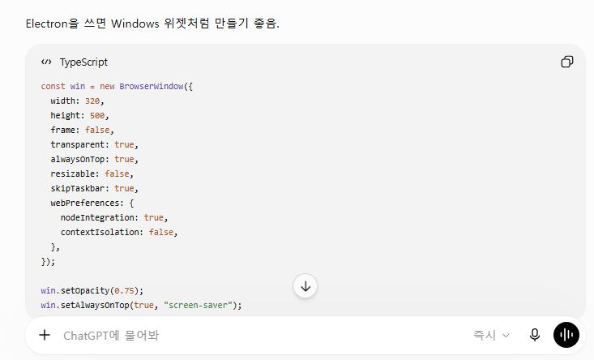
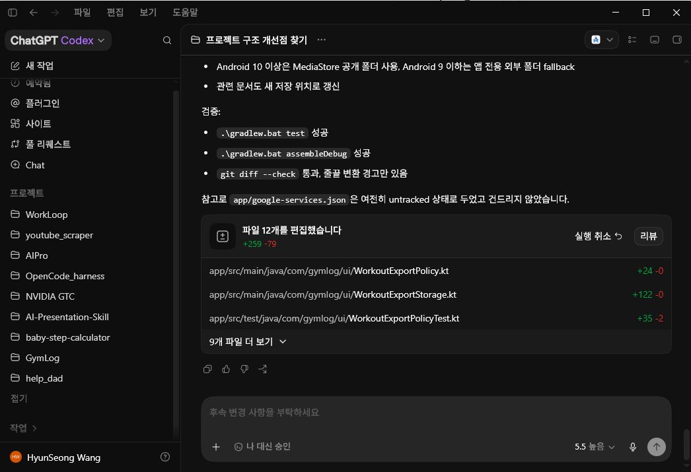
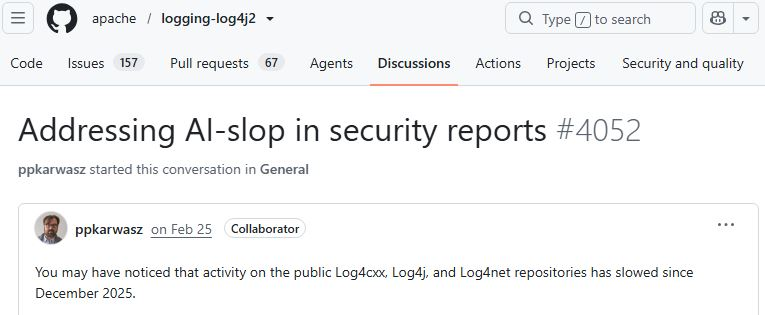
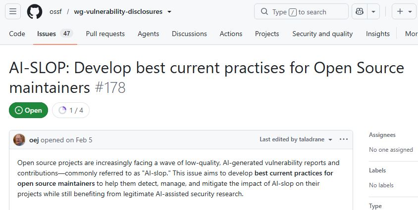
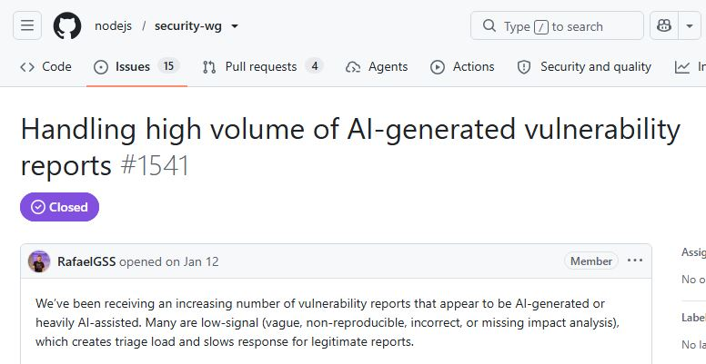

OpenCode로 해보는
Harness 튜토리얼
로컬 세팅부터 Harness 까지, AI가 사고 안치는 구조 만들기
오늘의 흐름
AI Agent의 진화와
새로운 과제
AI가 코드를 알려주는 단계에서, 개발환경 안에서 일을 수행하는 단계로.
무엇이 달라졌는가
과거의 AI 코딩 지원

ChatGPT 사용: AI가 코드 예시를 답하면, 개발자가 복사하고 실행하고 검증한다.
현재의 Code Agent

Codex 사용: Agent가 저장소를 이해하고 파일을 수정하며 Build/Test 결과까지 확인한다.
Prompt에서 Loop까지
엔지니어링“어떻게 말해봐”질문을 잘 다듬으면 답이 좋아짐.
엔지니어링“이 배경을 알아둬”알아야 할 맥락을 미리 제공.
엔지니어링“환경 자체를 설계하자”도구·규칙·검증·흐름까지 체계화.
엔지니어링“목표까지 반복하자”트리거와 검증 가능한 목표
Harness의 4대 구성요소
AGENTS.md / docs → Context
Permission / Hook → Constraints
Phase / Runner → Workflow
Build / Test → ValidationAI를 막는 것이 아니라,
AI가 올바르게 일할 수 있는 환경을 설계해야 한다.
생산성은 활용하되, 결과는 검증 가능해야 한다.
AI SLOP 과 AI 판타지로 고통 받는 현업자들
cURL 프로젝트는 AI가 만든 저품질 보안 신고가 유지보수자를 소진시키는 과정을 공개했고, 결국 버그바운티 종료를 발표했다.
cURL만의 특수한 문제가 아니다
Log4j와 Node.js도 같은 피해를 공개했고,
생태계·플랫폼 차원의 대응을 논의할 정도로 확산된 문제다.



AI가 결과를 만드는 속도보다, 사람이 검증해야 하는 비용이 더 큰 병목이 된다.
AI를 배척하자는 이야기가 아닙니다!
AI는 정말 중요하고 강력한 도구입니다. 문제는 도구의 가능성을 넘어, 모든 것을 해결해 줄 거라는 AI 판타지에 빠지면 안된다는 점입니다.
AI를 잘 쓴다는 것은 많이 생성하는 것이 아니라
검증 가능한 결과를 만들게 하는 것이다.
OpenCode의 핵심 구성요소
Phase기반 Harness를 이해하려면 OpenCode의 구성요소와 운영 원칙을 알아야 한다.
OpenCode 주요 구성요소
| 구성요소 | 역할 | Harness 활용 |
|---|---|---|
| AGENTS.md | 프로젝트 지식과 작업 규칙 | 개발 표준, 금지사항, 빌드 방법 |
| Agent | 역할과 권한을 가진 작업자 | 분석, 구현, 리뷰 역할 분리 |
| Skill / Command | 재사용 지침과 반복 작업 진입점 | Phase 생성, 실행, 검토 |
| Tool / Permission | 실제 작업 수단과 허용 범위 | 파일 수정, Shell 실행, 위험 명령 제한 |
| Plugin / Hook | 이벤트 기반 확장과 검증 | 실행 전후 검사, Build/Test |
더 자세한 내용은 OpenCode docs에서 확인할 수 있습니다.
AGENTS.md는
Agent가 먼저 읽는 프로젝트 헌법
Agent에게 “이 프로젝트에서는 어떻게 생각하고, 어디까지 바꾸고, 무엇으로 완료를 판단할지”를 알려주는 문서다.
AGENTS.md에 담을 것
- 프로젝트 구조와 주요 문서 위치
- 작업 원칙과 금지사항
- 빌드·테스트·검증 명령
- 변경 범위와 완료 기준
Agent는 역할과 권한을 가진 작업자
책임이 분리될수록 실행 결과를 더 냉정하게 검증할 수 있다.
Skill은 반복 가능한 업무 방식을 제공한다

모호한 요청 → grill-me → 명확한 요구사항 → make-phase → 승인된 Phase → run-phase / Runner → VerifyPlugin과 Skill 참고 자료
전역 설정과 프로젝트 설정
전역 설정
~/.config/opencode/
├─ opencode.json
├─ AGENTS.md
├─ agents/
├─ commands/
└─ skills/프로젝트 설정
project/
├─ opencode.json
├─ AGENTS.md
└─ .opencode/
├─ agents/
├─ commands/
├─ skills/
└─ plugins/Phase 기반
OpenCode Harness
Agent 작업을 제한하고, 순서대로 실행하며, 독립적으로 검증하는 구조
자유로운 AI실행의 문제
“기능을 구현해줘”
↓
AI가 범위 해석
↓
여러 파일 수정
↓
완료 기준을 자체 판단
↓
사용자는 결과가 맞는지 나중에 확인하네스를 올리는 두 가지 방법
둘 다 내장된 AI 실행 위에 통제와 검증을 한 겹 더 얹는 방식이다.
메타 하네스
범용 하네스
oh-my-opencode 같은 상위 워크플로우
- Agent 분리, 파이프라인, 모니터링
- 한 번에 풀 세팅
- 내 프로젝트 규칙은 모름
- 초기 세팅이 복잡할 수 있음
커스텀 하네스
내 프로젝트에 딱 맞게 직접 구성
- AGENTS.md / CLAUDE.md에 프로젝트 규칙
- docs/에 기획서와 아키텍처
- hooks로 자동 검증
- 가볍고 바로 시작 가능
Harness = AI가 혼자서도
잘 일하는 작업 환경
모델은 엔진, Harness는 엔진을 받쳐주는 차체 전체
반복되는 지식 노동이라면 코딩이 아니어도 똑같이 설계할 수 있다.
Phase 방식
Task를 작게 만들수록 모델이 처리해야 할 판단량도 줄어든다.
OpenCode 튜토리얼용
Harness 구조
project/
├─ AGENTS.md
├─ docs/
│ ├─ PRD.md : 뭘 만드는지
│ ├─ ARCHITECTURE.md : 어떻게 만드는지
│ ├─ ADR.md : 왜 만드는지
│ └─ UI_GUIDE.md
├─ .opencode/skills/
│ ├─ make-phase/
│ └─ run-phase/
├─ phases/
│ └─ _template/
│ ├─ index.json
│ └─ state.json
└─ scripts/
├─ execute.py
├─ hooks/
└─ success/build-opencode-harness로 만들고 확인한다
Skill이 만드는 구조
AGENTS.md와docs/가 있는가.opencode/skills/에 skill이 있는가scripts/execute.py와 hook이 있는가phases/_template/이 있는가
동작 확인
python scripts/execute.py --help
python -m py_compile scripts/execute.py scripts/hooks/*.py
powershell -NoProfile -ExecutionPolicy Bypass \
-File scripts/hooks/check.ps1docs/는 프로젝트의 뇌
DDD는 도메인과 용어를 잡고, SDD는 기능 명세와 제약을 고정한다.
make-phase
Phase 문서를 만든다
요구사항, docs, 제외 범위, 완료 기준을 실행 전 검토 가능한 문서로 바꾼다.
Phase 문서 예시
Prompt
지금 무엇을 요청하는가
Todo 완료 상태 변경 기능을
구현해줘.Phase
make-phase template 기준 항목
# Goal
Todo 항목 완료 상태 변경
# Inputs
docs/PRD.md, docs/ARCHITECTURE.md
# Instructions
상태 변경 로직과 테스트를 추가한다.
# Out of Scope
삭제 기능, UI 스타일 변경
# Done Criteria
완료/미완료 상태가 저장되고 조회된다.
# Verification
ant compile
ant testPhase 생성 과정
run-phase
승인된 Phase를 실행한다
manifest, state, hook을 사용해 실행 순서와 검증 결과를 파일로 남긴다.
index.json과 state.json
index.json
{
"steps": [
{
"id": "20-implement",
"file": "20-implement.md",
"type": "agent",
"requires": ["10-plan"],
"commit_after": true
}
]
}state.json
{
"approved_by_user": true,
"current_step": "20-implement",
"completed_steps": ["10-plan"],
"failed_step": null,
"blocked": false
}실행 순서와 작업 상태를 대화가 아니라 파일에 남긴다.
생성 Agent와 검증 주체를 분리한다
피해야 할 구조
Developer Agent
→ 코드 작성
→ 스스로 결과 평가
→ 스스로 완료 선언권장 구조
Developer Agent
→ 코드 작성
Build / Test / Lint
→ 결정적 검증
Reviewer Agent
→ 독립적 품질 평가전체 실행 흐름
요구사항 입력
↓
make-phase
↓
Phase 문서 생성
↓
사용자 검토·승인
↓
execute.py
↓
다음 미완료 Step 선택
↓
Pre Hook
↓
Agent / Command / Verify
↓
Post Hook
↓
state.json 기록
↓
다음 Step 또는 중단승인 절차와 안전장치
승인 전
- Phase 내용 검토
- 작업 범위와 Out of Scope 확인
- Done Criteria와 Verification 확인
- 변경 위험 검토
Hook
- 허용되지 않은 파일 접근 검사
- 필수 문서와 이전 Step 상태 확인
- Build/Test 수행
- 검증 실패 시 완료 처리 금지
이제 IntelliJ 화면에서 Hook이 실제로 어디서 막고, 무엇을 남기는지 확인한다.
실패하면 반복보다 상태를 먼저 본다
state.json에서 실패 Step과 blocked 상태를 확인한다.Harness의 목적은 실패를 숨기는 데 있지 않다. 실패를 다음 판단 가능한 상태로 남기는 데 있다.
Harness는 AI를 묶는 장치가 아니라,
AI의 속도를 검증 가능한 결과로 바꾸는 실행 구조다.
Context · Constraints · Workflow · Validation